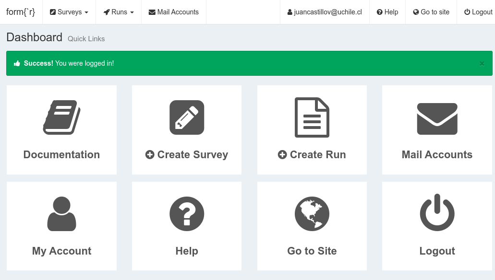

Tutorial formr
Contexto
Actualmente, el diseño de cuestionarios e instrumentos de medición en el contexto del desarrollo de encuestas sociales se implementa principalmente en formato web. Incluso cuando la aplicación es cara-a-cara, crecientemente las entrevistas se encuetran mediadas por un dispositivo electrónico tipo tablet o teléfono donde se registran las respuestas. Por lo tanto, la elección de la plataforma en la cual diseñar y programar la encuesta cobra cada vez más importancia.
La plataforma utilizada por defecto por el público general al momento de diseñar encuestas actualmente es Google Forms, que tiene la ventaja de ser fácil de diseñar, administrar y registrar respuestas. Sin embargo, carece de funcionalidades necesarias en investigaciones sociales (como aleatorización). Para encuestas con funciones más avanzadas existen servicios como Qualtrics y Surveymonkey, que poseen muchas ventajas en diseño de cuestionario pero que poseen limitaciones en términos de licencias pagadas y propiedad del trabajo realizado. Por ejemplo, si se deja de pagar Qualtrics, todo el trabajo de programación de la encuesta en la plataforma ya no es accesible y es difícilmente transferible a otras plataformas.
formr es a la vez una plataforma y una librería de R que permite desarrollar y administrar encuestas en un entorno caracterizado por:
- código abierto
- amplia variedad de funcionalidades como aleatorización de módulos y preguntas, encuestas longitudinales, experimentos, etc.
- programación en un entorno simple (planilla de cálculo)
- propiedad de los contenidos (a diferencia de plataformas donde la programación de la encuesta es accesible mediante licencia pagada)
- vínculo expedito con R, tanto para análisis de los datos como también para incorporar en la encuesta elementos generados mediante R / Rmarkdown
Los pasos para poder utilizar formr son los siguientes:
- generar una cuenta
- crear encuesta
- publicar encuesta
- monitoreo de respuestas
- obtener datos desde R
1. Generar cuenta

abrir una cuenta en formr.org (en ocasiones puede que las cuentas para usuarios nuevos estén temporalmente suspendidas, en ese caso abrir una cuenta en https://workshops.formr.org/, que se utiliza para fines de aprendizaje)
confirmar el mail enviado al correo con el que se abrió la cuenta y hacer login.

- enviar un correo a accounts@formr.org para obtener una cuenta de administrador. En el asunto escribir: administratior account request, y en el cuerpo del correo: Dear formr team, I would like to request an administrator account as well as API keys for my account [aquí el correo con el que se creó la cuenta]. Best regards [nombre].
En general la respuesta es rápida.
- Una vez recibido el correo autorizando la cuenta como administrador, al ingresar nuevamente a formr se muestra un panel (dashboard) con distintas opciones:

Las principales opciones son:
- Create survey: es el diseño del cuestionario
- Create run: es la implementación de la encuesta
Además, hay un link a Documentation, que es el manual de formr y se recomienda leer. En este tutorial cubriremos solo algunos aspectos contenidos en el manual.
2. Crear encuesta
- botón create survey en el dashboard: aparecen dos formas de ingresar la información, desde un archivo local o una Googlesheet, que es un simil de excel en los archivos de Drive de google.

en general se recomienda vincular a una hoja de Googlesheets
la planilla donde se ingresa la información posee ciertas columnas específicas que luego son leídas por formr:

las columnas principales de la planilla son:
- type: tipo de item (se especifica con un código que se detalla abajo)
- name: es el nombre del item y también será el nombre de la variable en la base de datos. Considerar: minúsculas, breves, sin caractéres especiales, sin espacios
- label: es el texto del item o pregunta
- choice: son las opciones de respuesta
las otras columnas son:
- class: opciones adicionales de la pregunta, como por ejemplo formato de las opciones, utilización de lista recurrente de opciones de respuesta, etc.
- optional: si la pregunta es opcional o no. Si se ingresa un asterisco en esta casilla la pregunta correspondiente es opcional, es decir, se puede seguir avanzando en el cuestionario a pesar de no responder ninguna opción.
- showif: es la manera de especificar filtros. Se utilizan operadores lógicos haciendo referencia al nombre de la pregunta (columna name) . Por ejemplo: pregunta1==3; se mostrará esta pregunta solamente a aquellos que hayan respondido 3 en la pregunta 1.
La columna explanations no es considerada en la lectura de la planilla desde formr, se utiliza solo para comentarios en relación a la pregunta (por ejemplo: “corregir pregunta antes del piloto”)
Creando la planilla
hay una planilla modelo de forms que se encuentra disponible aquí. Para poder generar un archivo propio y editable a partir de este modelo se debe hacer una copia en el drive personal: ir a archivo > hacer una copia, y se sugiere dar un nombre que permita su clara identificación (ej: probandoencuesta)
una vez creado el archivo se debe generar permiso para que pueda ser accesible desde formr: en compartir > cualquier persona con el enlace > editor.
copiar la dirección de la planilla y pegar en la ventana de formr sheet link. Además, dar un nombre a la encuesta (survey name). Acá hay restricciones: debe comenzar con una letra, entre 2 y 64 caracteres, si caracteres especiales (tildes, eñes, espacios). Para este tutorial le daremos el nombre “prueba1”
con esto la información de la planilla debería cargarse y así se puede acceder a la encuesta desde el menú superior (Surveys). Al hacer click en la encuesta se abre la siguiente plataforma de diseño:

- si se presiona la opción test survey se puede visualizar (renderizar) las instrucciones de la planilla, y al comparar planilla con la visualización se puede tener una idea de cómo se especifican los distintos tipos de ítems e información que aparece en la encuesta
Tipos de items y campos
El aspecto central del cuestionario sin duda se realaciona con el diseño de items. En la planilla, el tipo de item se especifica en la columna type. Los principales son:
Texto:
- text: campo de texto para respuesta breve
- textarea: campo respuesta amplia
- note: solo texto (por ejemplo encabezados, instrucciones), no solicita respuesta
Botón de salto de página:
- submit, y darle un label para poder avanzar
Selección múltiple
type descripción mc lista_de_elección opción múltiple (botones de radio), puede elegir solo uno. mc_button lista_elección como mc pero en lugar de que el texto aparezca junto a un botón pequeño, un botón grande contiene cada etiqueta de opción mc_multiple opción múltiple múltiple (casillas de verificación), puede elegir varios. Opciones definidas como arriba. mc_multiple_button como mc_multiple y mc_button controlar una sola casilla de verificación para la confirmación de una declaración. check un botón más grande para comprobar. rating_button; min, max, step Esto muestra la etiqueta de elección 1 a la izquierda, la etiqueta de elección 2 a la derecha y una serie de botones numerados definidos por min, max, step en el medio. Los valores predeterminados son 1,5,1. sex abreviatura de mc_button con los símbolos ♂, ♀ como opciones select_one un menú desplegable, puede elegir solo uno select_multiple select_or_add_one, choice_list, maxType como select_one, pero permite a los usuarios elegir una opción no dada. Utiliza Select2. se puede usar para establecer un límite superior en la longitud de la opción agregada por el usuario. El valor predeterminado es 255. select_or_add_multiple, choice_list, maxType, maxChoose como select_multiple y select_or_add_one, permite a los usuarios agregar opciones no proporcionadas. Se puede usar para colocar un límite superior en la cantidad de opciones seleccionables. mc_heading, choice_list Este tipo le permite mostrar las etiquetas para las opciones mc o mc_multiple solo una vez. Para obtener el aspecto tabular necesario, asigne un ancho constante a las opciones (usando, por ejemplo, mc-width100), asigne al encabezado las mismas opciones que a los mcs y asigne a los siguientes mcs (o mc_multiples) las mismas clases + hide_label. En pantallas pequeñas, mc_heading se ocultará y las etiquetas se volverán a mostrar automáticamente, ya que, de lo contrario, el diseño tabular se rompería.
Un ejemplo de encuesta con estas opciones se puede ve aquí. El archivo de origen se puede acceder aquí
3. Generar y publicar encuesta (Runs)
Una vez que se ingresa la información del cuestionario se pasa a la generación y publicación de la encuesta. Para esto hay que generar un Run en formr. Para ello:
- desde el dashboard o el menú superior: Create run, y dar un nombre con las restricciones habituales, aparece lo siguiente:

- un Run es el diseño del estudio propiamente tal. Para ello se pueden ingresar items de distintas encuestas presentes en la cuenta, ordenar, introducir elementos adicionales como pausas, tiempos, mensaje final, etc. también desde el Run se puede visualizar la encuesta con Test run .